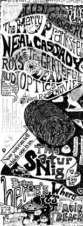

All of this got me curious, and I followed the threads. When I started reading the original Beat classics I knew I had found something important and real, and since I was already very interested in fiction I soon became personally involved with the whole Beat 'thing.' The purpose of this page is to document the musical connections that originally caught my interest. There's much more to be said about all this; maybe eventually I'll be the one to say it.

A poster for one of the later Acid Tests, after the Dead changed their name, is at left. This all took place around 1965/66, before the Summer of Love, before the Hippie explosion (in fact this greatly inspired the Hippie explosion, at least in Haight-Ashbury). Dead songs about Neal include 'The Other One' and 'Cassidy'. I used to think 'He's Gone' was about Neal too, and a lot of people have thought so as well; it turns out it's not but it could have been.
Despite Dylan's close connection to Ginsberg, Dylan's creative point of view seems to me even more akin to Kerouac's than to Ginsberg's. In fact I suspect (with no evidence at all on this) that the reason Dylan doesn't stress how much he has gotten from Kerouac is that he doesn't want to admit it. An example of a very Kerouac-like Dylan work: the excellent spoken-word performance of 'Last Thoughts On Woody Guthrie' on The Bootleg Series.
Kerouac didn't think much of Dylan, according to reports I've heard. That's what one would figure, too, given Kerouac's general hostility to the hippie/liberal scene of the Sixties. Anyway, that's Dylan typing in the picture at the top of this page. There's a new official Bob Dylan website now too, and it's really good (I helped build it).
Like I said, this connection is not very well-known, maybe because Pink Floyd's later popularity with suburban teenage audiences has caused 'serious' types to look down upon them. But I was a suburban teenage Pink Floyd freak once, and I know how good they were (I say 'were' rather than 'are' because I'm not too crazy about the recent post-Roger-Waters material). From the days of the playful and misunderstood genius Syd Barrett to the stoned hypnotic experiments of 'Ummugumma' and 'Soundtrack From 'More'' to the clock-like perfection of 'Dark Side' and the naked anguish of 'The Wall' and 'The Final Cut,' this band went places no other quartet or quintet of electronic-instrument-wielders could possibly have gone.
The most prominent symbol of the connection between Pink Floyd and the Beats is Miles, owner of the Indica bookshop and a key member of the London art/poetry/rock scene. He went on to write the first major book on Pink Floyd ('Pink Floyd: A Visual Documentary by Miles') and also wrote the first major biography of Allen Ginsberg (as the more conventionally-named Barry Miles). He later wrote a biography of William S. Burroughs as well. I don't know much about Miles, and I'd sure like to find out more. I understand it was in his bookstore that John and Yoko met.
The connections to the Beats were numerous, but tended to be incidental. Ginsberg's crowd and Warhol's crowd shared the same stomping ground, the Village and the Lower East Side, but their basic philosophies were quite different; Warhol liked to dwell in the negative, nasty, seamy side of life, and Ginsberg was a bearded finger-cymbal-clanging flower child. This kept the two groups from forming any major creative alliances. But you can't delve very far into the mid-Sixties activities of either group without running into the other.
As a lyricist Lou Reed has often been compared to Burroughs, as both are fascinated with heroin, down-and-out characters and the seamy side of the city. Ted Morgan actually insults Lou Reed in his otherwise intelligent biography of Burroughs, calling him a cheap Burroughs imitation ... as I said, this is a good book aside from this uninformed remark. In fact I find Burroughs' and Reed's approaches entirely different: Burroughs plays with ideas, breaks rules and strives to make his work incomprehensible as straight narrative, whereas Reed is a minimalist, writing about emotions and events with simple, naked clarity. In his extreme emotional self-revelations, Reed is actually more similar to Kerouac and Ginsberg than to the enigmatic Burroughs. (I also think he's a brilliant guitarist and songwriter, perhaps my favorite musician of all time.)
Lou Reed was one of the speakers scheduled to present at the Summer 1995 Kerouac Conference at New York University. I was surprised when I heard this, because Lou always maintains a severe ironical distance in his public persona, and NEVER does things like this. My reaction was obviously correct, because Lou's name was dropped from the list soon after, and Graham Parker's name was added (see below).
Richard Hell and the Voidoids were one of the great original New York scene punk bands, and Hell coined the term "Blank Generation" (which never took off anyway, unlike "Generation X," which was the name of Billy Idol's band around the same time). In fact, I recently heard the Rhino "Beat Generation" boxed set and discovered that "Blank Generation" was virtually a parody of the super-corny Rod McKuen song "I belong to the Beat Generation," which was so hokey even McKuen recorded it under a pen name. You can hear the original Rod McKuen song on the Rhino/WordBeat 3-CD set "The Beat Generation."
Richard Hell also discovered the great guitarist Robert Quine, who was responsible for the Voidoids' distinctive sound. I used to see the band a lot back when I was in high school, and they were great.
In case you're interested, here's The Blank Generation Web, from somewhere in Japan.
Somebody had to come up with the "bivouac" rhyme sooner or later.
We'll write a postcard to our friends and family
In free verse
On the road with Kerouac
Sheltered in his Bivouac
On this road we'll never die...
Let's go away!
I'm planning to get one of their CD's soon but I'm just so damn busy and I keep forgetting. Till then, I get my Sonic Youth Beat Connection info from Mike McCullough (here's a bunch of Sonic Youth stuff on his music page). Most recently he told me that Lee Ranaldo has a solo album out called "Scripture of the Golden Eternity," which is also the name of a great piece of Kerouac freeform Buddhist writing that you can read here. According to Mike the album is "the usual lee ranaldo feedback distortion delay loops, with some spoken spiel interjected over the noise, too weird to have a lot of mass market appeal, but it is out there. it is on father yod records distributed by drunken fish."
You're not punk and I'm telling everyone.
Save your breath, I never was one.
You don't know what I'm all about.
Like killing cops and reading Kerouac.
My enemies are all too familiar.
They're the ones who used to call me friend.
I'm coloring outside your guidelines.
I was passing out when you were passing out your rules.
One, two, three four. Who's punk? Whats the score?
Got a friend. Her name is boxcar.
Cigarettes and beer in El Sob.
Her hair was blue now it's green.
I like her mind. She hates the scene.
You're on your own. You're all alone.
I'm sitting on the Cafe Zinho's steps
Could I take you out
And if the sound of this it frightens you
and hey Jim why did you have to come
But we could wait awhile
The thousands they had tread
And we could wait our lives
From the top you can see Monterey
And hey Jim Kerouac brother of the famous Jack
He's sitting on the cafe Zinho's steps
Boy you are looking bad
But if she asks me out
Cigarettes and carrot juice
I'm sitting on the cafe Zinho's steps
Cigarettes and carrot juice
(Incidentally Kerouac had no brother Jim, though he had a
sister named Nin and an older brother named Gerard who died
as a child.)
and get yourself a new tattoo
for those sleeveless days of June
with a book I haven't started yet
watching all the girls walk by
I'll be yours without a doubt
on that big dipper
we could play it real cool
and act somewhat indifferent
why did you have to come around so soon
I wasn't ready for all this nature
The terrible green green grass
and violet blooms of flowered dresses
and afternoons that make me sleepy
before we push that dull turnstile
into the passage
and others sometimes fled
before the turn came
before a chance arrives
before the passage
or think about San Jose
though I know it`s not that pleasant
or so he likes to say
lucky bastard
with a girl I'm not over yet
watching all the world go by
did I make you feel that sad
I'm honestly flattered
I'll be hers without a doubt
on that big dipper
and get yourself a new tattoo
for those sleeveless days of June
I haven't got the courage yet
I haven't got the courage yet
I haven't got the courage yet
I should be allowed to think
I saw the worst bands of my generation
I am not allowed
I was the worst hope of my generation
I saw the best minds of my generation
Destroyed by madness, starving, hysterical
I should be allowed to glue my poster
I should be allowed to think
I should be allowed to glue my poster
I should be allowed to think
I should be allowed to think
And I should be allowed to blurt the merest idea
If by random whim, one occurs to me
If necessary, leave paper stains on the grey utility pole
Applied by magic marker to dry wall
I should be allowed to shoot my mouth off
I should have a call in show
To ever come up with a single original thought
I am not allowed
To meet the criminal government agent who oppresses me
Destroyed my madness, starving, hysterical
I should be allowed to share my feelings
I should be allowed to feel
I should be allowed to glue my poster
I should be allowed to think
I should be allowed to think
I should be allowed to think
And I should be allowed to blurt the merest idea
If by random whim one occurs to me
But sadly, this can never be
I am not allowed to think
I'm wheels, I am moving wheels
I am a 1952 studebaker coupe
I'm wheels, I am moving wheels moving wheels
I am a 1952 starlite coupe ...
en route .... les souterrains
Des visions du Cody ... Sartori a Paris ...
Strange spaghetti in this solemn city ...
There's a postcard we've all seen before...
Past wild-haired teens in dark clothing
With hands-full of autographed napkins we
eat apples in vans with sandwiches...rush
into the lobby life of hurry up and wait
Hurry up and wait for the odd-shaped keys
Which lead to new soap and envelopes...
Hotel room homesickness on a fresh blue bed
And the longest-ever phone call home....no
Sleep no sleep no sleep no sleep and no mad
Video machine to eat time... a cityscene
I can't explain the Seine alone at 4 a.m.
The Seine alone at 4 a.m....Neal and Jack and me
Absent lovers, absent lovers...
Mary is strapping on a rubber penis. "Steely Dan III from Yokohama," she says, caressing the shaft. Milk spurts across the room.Jeez. And I used to think those guys were soft."Be sure that milk is pasteurized. Don't go giving me some kinda awful cow disease like anthrax or glanders or aftosa...."
"When I was a transvestite Liz in Chi used to work as an exterminator. Make advances to pretty boys for the thrill of being beaten as a man. Later I catch this one kid, overpower him with supersonic judo I learned from an old Lesbian Zen monk. I tie him up, strip off his clothes with a razor and fuck him with Steely Dan I. He is so relieved I don't castrate him literal he come all over my bedbug spray."
"What happen to Steely Dan I?"
"He was torn in two by a bull dike. Most terrific vaginal grip I ever experienced. She could cave in a lead pipe. It was one of her parlor tricks."
"And Steely Dan II?"
"Chewed to bits by a famished candiru in the Upper Baboonasshole. And don't say 'Wheeeeee!' this time."
"You slip, you slack, you clock me and you lack While I'm reading "On The Road" by my man Jack Kerouac"
Hey Jack KerouacHey Jack Kerouac, I think of your mother and the tears she cried, she cried for none other than her little boy lost in our little world that hated and that dared to bring him down. Her little boy courageous who chose his words from mouths of babes got lost in the wood. Hip flask slinging madmen, steaming cafe flirts, they all spoke through you.
Hey Jack, now for the tricky part, when you were the brightest star who were the shadows? Of the San Francisco beat boys you were the favorite. Now they sit and rattle their bones and think of their blood stoned days. You chose your words from mouths of babes got lost in the wood. The hip flask swinging madmen, steaming cafe flirts, nights in Chinatown howling at night.
Allen baby, why so jaded? Have the boys all grown up and their beauty faded? Billy, what a saint they made you, just like Mary down in Mexico on All Souls' Day.
You chose your words from mouths of babes got lost in the wood. Cool junk booting madmen, street minded girls in Harlem howling at night. What a tear stained shock of the world, you've gone away without saying goodbye.
Home in the darkness
Home in the valley
Which is likely to have been inspired by a poem that
appears in 'On The Road':
Home in the city
Home isn't pretty
Ain't no home for me
Home on the highway
Home isn't my way
Home I'll never be
Home in old Medora
Home in Missoula
It's also worth nothing that the band's very talented
singer and lead guitarist goes by the name of Buck Dharma.
Home in Truckee
Home in Opelousas
Ain't no home for me
Home in Wounded Knee
Home in Ogallala
Home I'll never be
Being that I'm the duke of my domain
My hat goes off to Mark Twain
Singing a song about what true men don't do
Killing another creature that's kind of blue
Writing about the world of the wild coyote
Good man Truman Capote
Talking about my thoughts 'cause they must grow
Cock my brain to shoot my load
I'm on my porch 'cause I lost my house key
Pick up my book I read Bukowski ...
jack was sittin poker faced with bullets backed with bitchesWaits also sings of Kerouac in a song called "Bad Liver and a Broken Heart (in Lowell)."
neal hunched at the wheel puttin everyone in stitches
braggin bout this nurse he screwed while drivin through nebraska
and when she came she honked the horn and neal just barely missed a
truck and then he asked her if she'd like to come like that to californy
see a red head in a uniform will always get you horny
with her hairnet and those white shoes and a name tag and a hat
she drove like andy granatelli and knew how to fix a flat
and jack was almost at the bottom of his md 2020 neal was yellin
out the window tryin to buy some bennies from a lincoln
full of mexicans whose left rear tire blowed and the sonsobitches
prit near almost ran us off the roadwell the nurse had spilled the manaschevitz all up and down her dress
then she lit the map on fire neal just had to guess
should we try and find a bootleg route or a fillin station open
the nurse was dumpin out her purse lookin for an envelope and
jack was out of cigarettes we crossed the yellow line
the gas pumps looked like tombstones from here
felt lonelier than a parking lot when the last car pulls away
and the moonlight dressed the double breasted foothills
in the mirror weaving outa negligee and a black brassiere
the mercury was runnin hot and almost out of gas
just then florence nightingale dropped her drawers and stuck
her fat ass half way out the window with a wilson pickett tune
and shouted get a load of this and gave the finger to the mooncountin one-eyed jacks and whistling dixie in the car
neal was doin least a hundred when we saw a fallin star
florence wished that neal would hold her stead of chewin
his cigar jack was noddin out and dreamin he was in a bar
with charlie parker on the bandstand not a worry in the world
and a glass of beer in one hand and his arm around a girl
and neal was singin to the nurse
underneath a harlem moon
and somehow you could just tell we'd be in california soon
Yeah it might have started back with Jack Kerouac
Probably more than likely it was Maynard G.Krebs
There are a number of literary references in Van Morrison's music- there are many to William Blake, as well as Alan Watts, Rimbaud, Joyce, etc.- but there are a couple of brief mentions of Kerouac as well. (Although I must say, usually he just invokes their names rather than actually alluding to their work.)
One is in "Cleaning Windows" from the album BEAUTIFUL VISION (1982) where he talks about a working man's pride in his job and his enjoyment of simple daily activities:
I heard Leadbelly and Blind LemonAlso, "On Hyndford Street" from HYMNS TO THE SILENCE (1993) is one of his zillion songs reminiscing about growing up listening to the crackling mystery of Radio Luxembourg. One verse is:
On the street where I was born
Sonny Terry, Brownie McGhee,
Muddy Waters sing "I'm A Rolling Stone"
I went home and read my Christmas Humphreys' book on Zen
Curiosity killed the cat
Kerouac's "Dharma Bums" and "On the Road".
Going up the Casltlereagh hillsI guess Jack Kerouac and Van Morrison have always coexisted in the same place in my brain. Both of them were brought up Christians (I think Morrison was a Jehovah's Witness) who later embraced Buddhism, and each follows a similar path- the pursuit of the infinite/god/buddha/whatever in the face of human reality.... At times, they both can reach it AND can communicate it in such a way that make you know exactly what it is, even if only for a moment, but at other times you can feel them pulling and straining to make sense of even the simplest things....
And the cregagh glens in summer and coming back
To Hyndford Street
Feeling wondrous and lit up inside
With a sense of everlasting life
And reading Mr. Jellyroll and Big Bill Broonzy
And `Really the Blues' by Mez Mezro
And `Dharma Bums' by Jack Kerouac
Over and Over again.
Old queers with young faces --- who remember your name,
Think you must have me all wrong.
From a dead beat to an old greaser, here's thinking of you.
You won't remember the long nights;
coffee bars; black tights and white thighs
in shop windows where blonde assistants fully-fashioned a world made
of dummies (with no mummies or daddies to reject them).
When bombs were banned every Sunday and the Shadows played F.B.I.
And tired young sax-players sold their instruments of torture ---
sat in the station sharing wet dreams of Charlie Parker,
Jack Kerouac, Rene Magritte, to name a few of the heroes
who were too wise for their own good --- left the young brood to
go on living without them.
though you're a dead beat with tired feet;
two ends that don't meet.
To a dead beat from an old greaser.
I didn't care, friend. I wasn't there, friend,
If it's the price of a pint that you need, ask me again.
The most Burroughs-related Bowie work is "Diamond Dogs." This fascinating concept album mixes snatches of George Orwell's novel "1984" with ominous, creepy Interzone-inspired imagery and sounds. The album begins with a spoken-word bit called "Future Legend" that could have come right from a Burroughs cut-up. On the "David Live" album (from a concert tour built around the "Diamond Dogs" concept) the first thing you hear is the faraway sound of Arab music, as if to set the show in Tangier.
"Diamond Dogs" (which features the songs "Rebel Rebel" and "1984") is a great album, probably my favorite Bowie work. The best bit is probably the long, swirling montage called "Sweet Thing," featuring Mike Garson's amazing "Cabaret"-style piano and some of the nastiest guitar noises I've ever heard.
And here's a Bowie beat connection I bet you didn't know -- Bowie recently revealed that he thought up the name of the song "Jean Genie" while in the City Lights bookstore when he spotted a book by the French transgressive novelist Jean Genet.
I saw the best minds
Thanks to John Regehr (regehr@virginia.edu).
Of my generation
Learn how to crawl
Across our nation
Conformity falls
Do you remember the time when we were young?
Do you remember the changes as we grew?
While I talked he sat and he never made a sound
Do you remember the church across the sands?
He said "I don't remember...Don't want to remember
So I left him, and I went out to the street
And far off in a deserted part of town
Hello old friend, what a strange coincidence to find you
It's been fifteen years since we last met, but I still recognised you
So call the barman over here, and let us fill our glasses
And drink a toast to olden times where all our memories lie,
Where all our memories lie.
Lowly, lowly, low
Outside the window the frosty moonlight hung
On the midnight snow
So we pulled our scarves around our faces in the night
Huddled on the doorsteps where the fairylights shone bright
Singing Christmas carols while our breath hung in the light
It all comes back like yesterday
It almost seems like yesterday
Slowly, slowly, slow
Sneaking in the back way into movies after school
For the evening show
Chasing skinny blue jean girls across the building-site
Checking out the dance floor while the band played 'Hold Me Tight'
See the blonde one over there--I bet she'd be alright
It all comes back like yesterday
It almost seems like yesterday
Staring at the glass beside me
Hey old friend, tell me what's on your mind?
Silence grows on you like ivy
Holy, holy, ho
You stood outside and planned to travel to the lands
Where the pilgrims go
So you packed your world up inside a canvas sack
Set off down the highway with your rings and Kerouac
Someone said they saw you in Nepal a long time back--
Tell me why you look away
Don't you have a word to say?
In fact I've heard too much already
I don't want to think, just leave me here to drink
Wrapped up in the warmth of New York City
Oh, oh, it seems you just don't know
And you just don't understand me
I've got no use for the tricks of modern times
They tangle all my thoughts like ivy."
Lowly, lowly, low
Where the red light girls were coming after me--
Forty dollar show
All across the city's heart the lights were coming on
The hotel lift softly hummed a Cole Porter song
If I went to look for him I knew he would be gone
A picture-card of yesterday
A photograph of yesterday
The shadows like a silent army
Flooded out the rooms in pools of blues and brown
And stuck to all the walls like ivy
Even if he didn't like Kerouac, though, I liked Dexy's classic 80's song "Come On Eileen" a real lot.
Thanks to Paul Williams (paulw@post.interalpha.co.uk) for sending me these lyrics. The song is called "There, There My Dear":
Dear Robin
I hope you don't mind me writing it's just that there's more than one thing I need to ask you. If you're so anti-fashion why not wear flares instead of dressing down all the same? It's just that looking like that I can express my dissatisfaction. Dear Robin, let me explain though you'll never see in a million years. Keep quoting Cabaret, Berlin, Burroughs, JG Ballard, Duchamp, Beauvoir, Kerouac, Kierkegaard, Michael Rennie. I don't believe you really like Frank Sinatra.
Dear Robin, you're always so happy, how the hell do you get your inspiration? You're like a dumb patriot. If you're supposed to be so angry, why don't you fight and let me benefit from your right? Don't you know the only way to change things is to shoot men who arrange things? Dear Robin, I would explain, but you'd never see in a million years.
Well you've made your rules but we don't know that game, perhaps I'd listen to your records, but your logic's far too lame and I'd only waste three valuable minutes of my life with your insincerity.
You see Robin I'm just searching for the young soul rebels and I can't find them anywhere. Where have you hidden them? Maybe you should welcome the new soul vision.
With your kittens, on the patchwork quilt,
Shake off your despondency, and your country girl act.
You're on the road.
You and I together, with nothing showing at all,
In a darkened cinema, I'll give you pleasure in the stalls.
Want to give you tenderness, and my affection too,
If it's through clenched teeth, that's what you've driven me to.
I want us to be lovers
I want us to be friends
Want it like it's the living end
Keep me away from her.
Oh no, what am I doing here, in the house Jack Kerouac built.
There's white magic, and bad rock 'n' roll
Your friend there says, he's the gatekeeper to my soul.
The velvet curtains
The Chinese bell
With friends like these, your damned as well.
Keep me away from her.
You are reading me poetry that's Irish and so black.
I know you're warm, the warmest person alive,
But are you warm deep down inside
I want us to be lovers
I want us to be friends
Want it like the world crumbles and then it ends.
Keep me away from her.
I've been reading some of your web pages, and was interested to see your connections between music and the beat authors. I was "turned on" to Kerouac via my passion for the Incredible String Band, or more specifically Mike Heron. Unlike the other original String Band man Robin Williamson (who has played, recorded and toured constantly since the ISB split in '74) Mike Heron stopped performing and turned songwriter throughout the '80s, but has been performing again with the Incredible Acoustic Band for the last three years or so. I could ramble on for hours about the ISB and the rise of the current wave of interest in the UK through Andy Roberts' BE GLAD fanzine, but perhaps I should get to the point!
Heron wrote and recorded a song called Mexican Girl which appeared on The Glen Row Tapes in 1989; it seems he's a big Kerouac fan - the song is specifically about Kerouac's Mexican girl in On The Road (her name has slipped my mind! - typical!) The song led me to the book, which then led me on to several other Kerouac gems, of which my favourite is Dharma Bums. (Reading Kerouac also led me indirectly to John Steinbeck, Hemingway and American literature in general, having previously been a scifi / fantasy buff all my life)
More recently, Heron has written (and currently performs) a song called Jack Of Hearts, which is based around the memoirs of Jack's first wife, whom I've just read about on one of your pages, Edie someone (I'm terrible with names!) Heron explained the song at a gig recently, although I didn't catch all the details. I think it's sung in the person of Edie's later boyfriend / husband lamenting the fact that he cannot measure up to her original love - Jack Of Hearts.
Clearly Heron is a Kerouac buff. I suppose it ties in with the ISB's interest in buddhism which I understand can be interpreted from some of their early material circa 1968, before LRH and Scientology took a hold.
(Incidentally, the Mexican girl's name was Terry, and Kerouac's first wife was Edie Parker.)
Burn a little brighter now
Doctor says my liver looks like leaving with my lover,
Dr. Finlay: And my advice is if you maintain this lifestyle
We burn a little brighter now
Read some Kerouac and it put me on the tracks
Read some Kerouac and it put me on the tracks
to burn a little brighter now.
It was something about roman candles fizzin out
shine a little light on me now,
I found a strange fascination with a liquid fixation
alcohol can thrill me now
It's getting late in the game to show any pride or shame
I just burn a little brighter now
I need another time out now,
Like any sort of hero turnin down to zero
still standing out in any crowd
Pulling seventeen with experience and dreams,
sweating out a happy hour,
Where you're hiding 29 you know it ain't a crime
to burn a little brighter now, burn a little brighter now
you won't reach 30
Torch: it's a romantic way to go really, part of the heritage
it's your round in'it
to burn a little brighter now
It was something about roman candles fizzin out,
shine a little light on me now,
I found a strange fascination with a liquid fization,
alcohol thrill me now
It's getting late in the game to show any pride or shame
We burn a little brighter now, burn a little brighter now
Thanks also to Joe Kulikauskas (kulikaus@shimoda.ena-east.ericsson.se) for reminding me of the song below and transcribing the lyrics. I like the line about "it is you and not he who is really the freak." The song is called The Persecution and Restoration of Dean Moriarty and it was written by Rex Fowler.
Well, look at him laughing and carrying on
[chorus 1]
2.
One look in his eyes and you know he's unsound
[chorus 2]
3.
So relax for a moment as you would for your hobby
[chorus 2]
He's like the dancing gold prairies that will never be mowed
[chorus 1]
1.
Well I can't understand what is wrong with the man
Don't he know how he's acting was long ago banned?
Don't you think it's a shame, someone tell me his name
If we let him continue he may get out of hand.
Like a hydrogen manic or an organic bomb
He's alive like a child so terribly wild
He has way too much freedon, of course, he is wrong, is wrong, yeah.
And he was born on the road in the month of July
And he'll live on the road till he sees fit to die
'Cause he's learned from the road how humanity cries
How society lies, he sees with more than his eyes.
Well won't you look at him running, don't he know how to walk?
He's just too damned cunning, you can tell by his talk
You can tell he is rude like a typical dude
If you want my opinion he belongs under lock.
There's no way to faze him 'cause he's nobody's clown
He's as deep as the sea and he's equally free
That's why I fear him and hate him and wish he was down, was down, yeah.
Whether riding the rails out of Denver,
Or bumming a friends' cigarettes,
He's asking them all to remember,
Making sure that they'll never forget.
So you're curious, friend, 'bout this man who I speak
For he tears you and scares you out of your sleep
I'm sure you will find, if you open your mind
It is you and not he who is really the freak.
His beauty abounds in his mind and his body
He's like the setting sun's hues or the dust on his shoes
He's living he's naughty he's Dean Moriarty, yeah.
4.
He may ride down the road at one hundred and ten
Exclaiming his thoughts about prisons and men
He may tell you his dreams, maybe something obscene
And you'll swear you've been through it but you don't know just when.
Or the wind in the sail that's about to explode
He's like fire and rain bringing pleasure and pain
And he learned all he knows from the ways of the road.
Now I was lucky in my building because the
On the 3rd floor there I was livin by candlenight
Now the crowd I hung out with well they were outcasts too
Ghosts upon the road they were ghosts upon the road
Soon I moved across the river and got a roommate right
Ghosts upon the road they were ghosts upon the road
Now the jungle war and politics was on everybody's mind
But ridin the rails of subways was far safer than the time I tried
Ghosts upon the road they were ghosts upon the road
It was then I knew that death was death that life was life
Ghosts upon the road they were ghosts upon the road
Now and then I think about Rachel who I followed up some
Ghosts upon the road they were ghosts upon the road
I was stranded up in Cambridge Mass it
was the winter of 64 before that in a torn-
down building up on Beacon Hill I made
my money mowing lawns that fall and
jukin in a band the air was full of energy
only a few could understand
city had forgot to board up all the doors and
windows and shut the electric off an abandoned
dog had earlier destroyed the first and second floors
I found some country records there but I had no stereo
but sometimes I'd hear noises in the night
crashed out in the corner of a room afraid to draw
attention I was eating cold out of cans later they
said I was living like a rat
Suzie alone and pregnant with my best friend's kid
Johhny Boy just got thrown out of the local loony bin
and Brain was renting out apartments that didn't exist
then one night alone I wrote a song about something
that I knew about the black faced miners it was a tune
from a man named Blue
just ghosts upon the road
off of Cambridge Ave Alfredo was from no man's land he
danced his car over the moon his eyes were full of Latin
smoke and his wall was full of knife holes he had a job as
a maitre'd and I didn't have enough to keep in cigarettes
his pockets were always lined and his bed was always full
my soul felt like an empty lot and people were hiding their
stash and stuff underneath their floorboards back then
everybody was paranoid of the cops and then there was Diana
she took me under her hat she's happily married with three
kids now so I won't go into that
just ghosts upon the road
they rejected me on mental grounds so it was not my lot to serve
that August day on Whitehall street I ran into some post beat hippies
I'd known I must have looked so weird to them they only waved at me
I'd been lucky to have been advised by some higher sources that I'd
known and managed to keep the circles under my eyes I knew that fear
can make a man crazy even more than make him scared you didn't need
a bloodhound to know the smell of blood was in the air soon I was asked
to leave the place the rest were asked to stay both my head and I were
dressed like Holden Caulfield on that day
like takin matters into my own hands down on the Lower East Side
that summer's night on Avenue B he almost jumped off a six story roof
next time I got a piano but I fell in love too soon but sometimes
I'd hear noises in the night
just ghosts upon the road
maybe there was an in between not just some French and Russian
novels or the love of a poet's life or the need to give everything
three had tried to kill me and three had saved my life life and death
were indistinguishable til death put an end to that I dreamed my life
would roll on forever like some great plain in the west my lovers I'd
count like billboards on ribbon route infinity cryin out Dean Moriarty
Sweet Marilyn here I come in our fast cars our rockin boots meet the
sons of the dharma bums til one went into the bathroom he took his belt
off and never came out and Melissa put one up inside the soft roof of
her mouth
just ghosts upon the road
steps and I think it was Georges Clemenceau who once said
that the highlight of making love first time was to watch a woman
from behind climbin up the stairway to her room but that was 1914
and now this was 14th Street in the Spanish neighborhood by the river
but it was long ago she said she took a lot of acid then but she ended
up besides many I knew ended up much worse and Ramblin Jack was wild
but Lowell Jack was first and I still shiver from the words but it's
these times I wonder when I'm all alone and I don't see you did I lose
my way or did you lose yours
just ghosts upon the road
Wouldn't you like to get away?
Kerouac's beckoning with open arms
And open fields of eucalyptus
Westward bound
In any case, I think the connection between the Beats and 1960's rock is an especially fascinating subject, especially with regard to three cities that had 'underground scenes' around 1965-66, London, New York and San Francisco, and the three major bands that arose from these scenes, Pink Floyd, the Velvet Underground and the Dead. Like I said up on the top of this page, I think there is a lot more to be said about this connection, and if nobody else finds the time to delve into this I think I eventually will.
NOTE: despite the many connections between the Beats and rock 'n' roll, the primary music associated with the Beat movement was jazz. There's also reason to suspect that some of those guys occasionally tossed a classical album on the turntable. Note this picture of 1010 Montgomery Street in San Francisco, where Allen Ginsberg wrote 'Howl.' It's a little hard to see, but the album on the shelf says "Mass In B Minor." Probably Bach or Vivaldi or some shit like that. Hey, you know those Ivy League types.